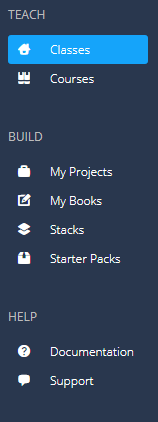

The Codio dashboard is the main screen you arrive at after logging into Codio. From here you access all the main components of Codio.
The appearance of the dashboard depends on whether you are a teacher/instructor or a student. The information below relates to teacher/instructors. Click here for information on the student dashboard.
Dashboard options
Here are the main options from the dashboard.

- Classes: this is where you administer classes and assign projects and courses to students. About classes.
- Courses: courses are teaching materials that are nicely organized for repeated teaching of content from semester to semester (or term to term, year to year). Course Units can be single Codio projects or a mapping to a part of a Codio book. About courses.
- My Projects: a project is a cloud based server with the Codio IDE attached. It is a great place to experiment. You can create as many as you like and configure your server (box) from the command line exactly as you would with any other server. About projects.
- My Books: books lets you build a complete book, with chapters, sections and pages that can be nested to any depth to form a table of contents and associated content that mirrors a normal book structure. Parts of a book can then be mapped to course units for class assignments. About books
- Stacks: Stacks are templated snapshots of a project's software configuration and are a very important and powerful feature of Codio. If you are assigning content to classes of students, it is very important you have a full understanding of stacks. About stacks.
- Starter Packs: a Starter Pack is a templated snapshot of a project's code workspace. Additionally a stack is specified. The result is an instantly startable snapshot of a fully configured environment. About starter packs.
- Documentation: a link to the general document. Documentation link.
- Support: this is our integrated support environment. If you need assistance from us, click here to leave us a detailed message and we will get back to you quickly.